Hoje 04/07/2025 começa uma jornada especial: 365 cartas, uma por dia, todas dedicadas a você. Pequenas declarações que revelam o quanto você é importante pra mim. ❤️
Episódio 1 - "Vai Tomando 🤘"
Episódio 2 - "Só preciso de 2 anos ⏳"
Episódio 3 - "Domingo à noite 🌃"
Episódio 4 - "Sem Pressa, Sem Promessa ⏳"
Episódio 5 - "Admirando Você 👀"
Episódio 6 - "Desculpe se fiz algo de errado 🙏"
Episódio 7 - "Maldia quinta vey 😩"
Episódio 8 - "505 ☎️"
Episódio 9 - "Substituível 💔"
Episódio 10 - "Esperando Você 🕰️"
Episódio 11 - "Nosso Jeito de Ser 🌙"
Episódio 12 - "Entre Pixels e Destinos 🌌"
Episódio 13 - "Eu te amo ❤️"
Episódio 1 - "Recomeços 🌅"
Episódio 2 - "Lembre de mim"
Episódio 3 - "Você é mais forte do que pensa 🦾"
Episódio 4 - "Frio ❄️"
Episódio 5 - "Ausência"
Episódio 6 - "Te Quero ❤️🔥"
Episódio 1 - " Uma poesia para voce"
Episódio 2 - " Primeiro Vídeo para voce S2"
Vamos lá... como é difícil começar a escrever uma carta pra você, sendo que o que eu mais queria hoje era estar aí do seu lado. Não precisávamos estar fazendo nada — só deitados juntos no sofá, mexendo no celular, mas juntos. ❤️
Ultimamente percebi que você anda um pouquinho mais calada. Não sei o que está passando aí dentro, mas já te falei uma vez e repito, meu amor: qualquer coisa, qualquer mesmo, que você precisar — se estiver ao meu alcance, eu vou te ajudar com o maior prazer.
Eu sei que esse é o seu jeitinho… guardar as coisas pra você, não querer incomodar, ter dificuldade de falar. Mas eu tenho certeza de que você desabafa com alguma amiga próxima. Um dia eu vou chegar nesse patamar com você também — de ser seu porto seguro, alguém com quem você se sinta confortável pra dividir tudo o que passa na sua cabeça.
Essa é só a primeira cartinha de abertura dessa série que estou fazendo. Espero que você goste dos próximos episódios e que, quando tudo isso terminar… a gente esteja juntos de verdade.
Eu te amo.
Com amor,
Lucas 🙂
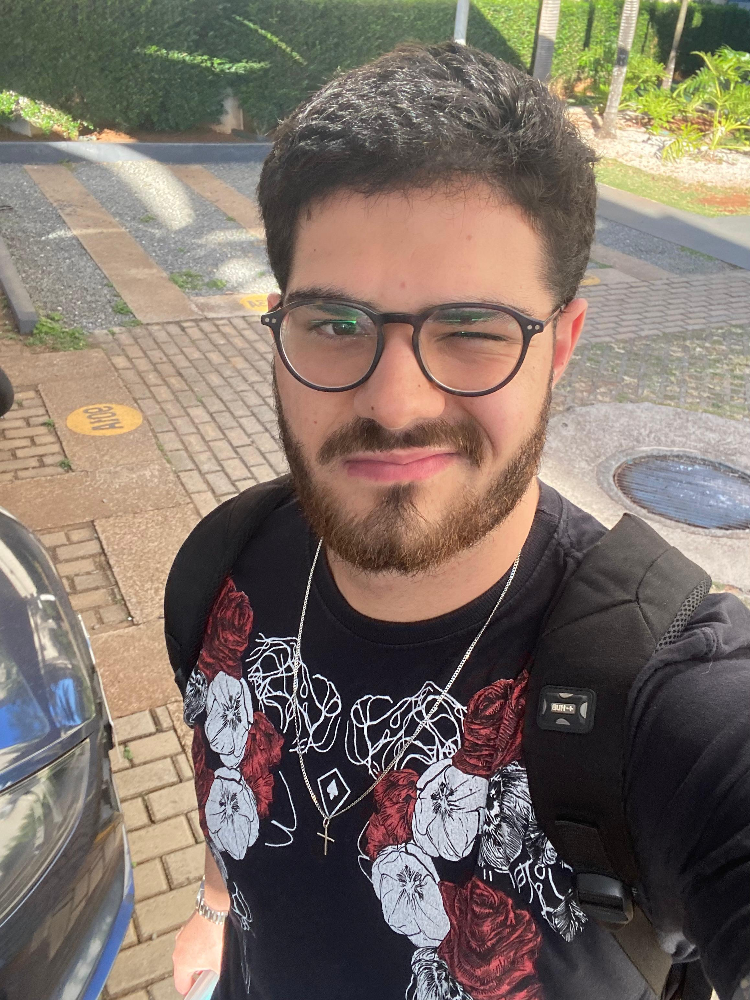
ton futur mari ici
Hoje o dia foi muito bom, fiquei o dia todo com os menino aqui em casa, mas o engraçado é que em nenhum momento eu parei de pensar em voce kkkk, eu gosto muito de conversar com vc, vc nao tem nem noção disso. Acordei pensando em você, fiquei o dia inteiro lembrando dessa risada de autista sua kkkkkkkkk, e agora, antes de dormir, sinto que precisava colocar isso em palavras. ❤️
Cada pequeno detalhe do seu jeito faz falta: sua voz me chamando, sua risada quando acha graça de algo bobo, até mesmo aquele jeitinho que você tem de franzir a testa quando está concentrada.
Sei que tudo isso parece estranho, voce ta ai mo longe, e eu fica falando que "a um dia eu vou ai te ver, espere por mim, etc etc", mas pra mim, isso so e combustivel pra querer mais e mais que de certo, diria que esse momento exigem paciência, mas quero que saiba que você é uma pessoa que eu amo e faria MUITA coisa pra estar do seu lado. Você me faz querer ser melhor a cada dia. Espero que essa carta te abrace de longe e faça você se sentir um mulherão do carai que voce é.
Eu te amo. Dorme bem.
Com saudades,
Lucas ❤️
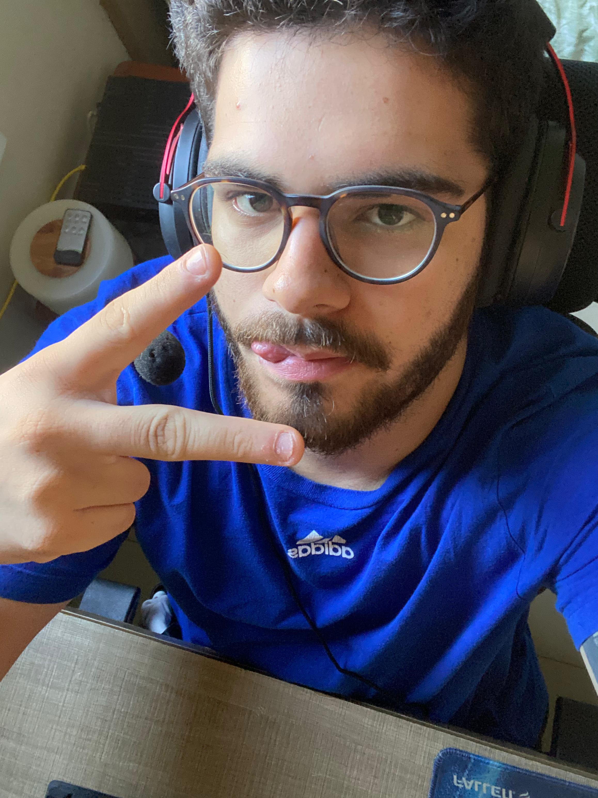
pour toi, mon amour
Domingo à noite...
Não fiz absolutamente nada hoje, mas o dia passou voando slk, sentindo muita dor no braço mas ta de boa, deitei ali para assisir um filme e lembrei de voce, era um filme de romance muito ruim vc nao tem ideia kkkkk, mas fala de uma mulher doida que viajava pra pedir o namorado em casamento. Eu to com um leve sentimento que vc vai esquecer da existencia dessas cartinhas e nem vai ler, mas independente se ler ou nao, escrever acaba sendo uma forma de deixar um pedacinho meu aqui. Vai que um dia você lê, né? 😅
Sei lá, às vezes bate aquele pensamento de "será que tô viajando demais?", mas aí eu lembro que prefiro ser alguém que sente do que alguém que passa pela vida fingindo que não sente nada.
Não tô aqui fazendo juras de amor eterno nem nada do tipo, mas tem algo em você que me prende a atenção — e isso não acontece com frequência. Então sigo escrevendo, mesmo que só eu leia. Meio como quem deixa uma garrafa no mar: pode ser que alguém encontre, pode ser que não... mas foi sincero. Te amo meu amor, desejo do fundo do meu coração que vc esteja bem.
Com carinho, do seu talvez futuro marido...
Lucas 🌇
le futur est à nous
Bom dia, meu amor!
Não sei a hora em que você está lendo isso, mas estou escrevendo pela manhã. Ontem, depois de cortar o cabelo, saí com os moleques para comer pizza. Slk, cheguei em casa estufado pra caramba kkkkkk.
Queria que você estivesse aqui comigo agora. Essa vontade louca de me encontrar com você aumenta a cada dia. Queria saber mais sobre você, mas você não fala nada, só fica dizendo "vai tomando" kkkkkkk.
Se prepara, porque quando a gente se encontrar, você não vai conseguir fugir das minhas perguntas não, ta? Nada de fazer que nem no WhatsApp!
Eu te amo, minha princesa. Sinto sua falta. Não vejo a hora de chegar aí e fazer você passar vergonha na Itália pedindo ketchup pra colocar na pizza kkkkkk, só pra ver a cara do garçom.
Brincadeira! Não vou fazer isso não... Mas algumas gracinhas têm que ter, né? Ainda mais com o nosso humor todo quebrado — vamos sair rindo de tudo por aí.
Com muito amor, ❤️
Lucas
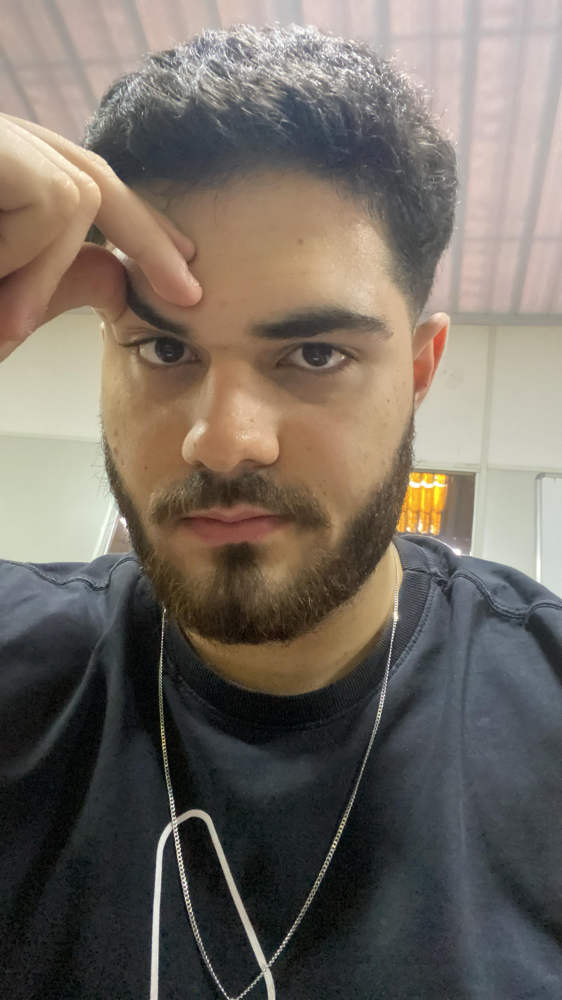
ton futur mari ici
Não consigo tirar os olhos de você... sua beleza me encanta — acaba tornando-se impossível não admirar você. 💖
Às vezes eu paro e fico olhando suas fotos por um tempo. Seu sorriso, seu olhar, sua forma de se expressar… tudo em você parece ter sido feito sob medida pra me deixar bobo. E eu fico. Fico mesmo.
Você tem uma leveza que me prende. Um jeitinho que me acalma e, ao mesmo tempo, me deixa ansioso pra estar perto. Eu poderia escrever mil palavras tentando descrever como me sinto, mas nenhuma delas chegaria perto do que você causa em mim.
Talvez seja isso o amor — esse sentimento bom que a gente sente só de pensar na outra pessoa. Com você, até o silêncio tem significado. Até os dias mais comuns viram especiais quando penso em nós dois.
Eu te amo. Muito. Com tudo que tenho e com tudo que sou.
Sempre seu,
Lucas ✨
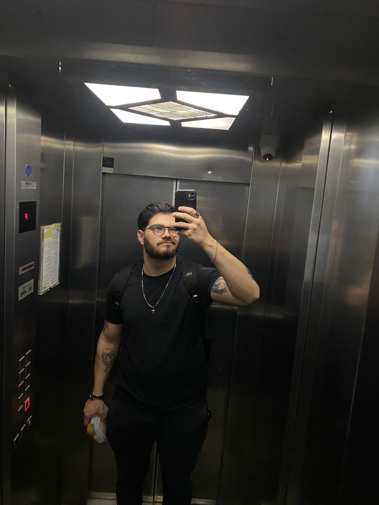
je ne vois que toi
Bom, como você não me responde mais, tá me ignorando por completo, decidi me afastar, mas não vou sumir, ainda estarei aqui, porque eu realmente gosto de você.
Não sei se você conheceu alguém aí, ou se só não vê sentido na gente, e tá tudo bem. Eu estava 100% disposto a te esperar, por todos esses anos, mas agora... vou seguir meu caminho.
Caso você leia isso — eu ainda te amo, eu ainda te quero. Fala comigo.
Pode ser que eu não tenha conhecido ninguém e aí voltamos a nos falar, e os planos que fiz com você voltem a ficar de pé... mas se você deomorar muito, pode ser também que eu já tenha conhecido alguém. Então é isso.
Continuo torcendo por você, sempre. Desculpa qualquer coisa.
Com carinho,
Lucas 🍃
Mano, cê nun tem ideia. Fui trabalhar hoje cedo e o carro não ligava de jeito nenhum. Fiquei uns 30 minutos tentando descobrir o que era, até que lembrei que tinha colocado álcool no tanque. Aí percebi que tava mais frio que o normal… descobri o motivo da zica, kkkkk.
Cheguei uma hora atrasado, pelo menos tinha cachorro quente de café da manhã, vai tomando kkkkkk.
Mudando de assunto… releva aquela carta anterior. Parei pra pensar e, pô, você tá aí do outro lado do mundo, e eu aqui falando besteira no WhatsApp.
É que eu gosto tanto de você, quero tanto que seja você… que toda vez que digo “eu te amo”, não é da boca pra fora.
Vem do fundo do meu coração — que brilha só pra você.
Sinto sua falta, minha japinha.
Com amor,
Lucas 🙂
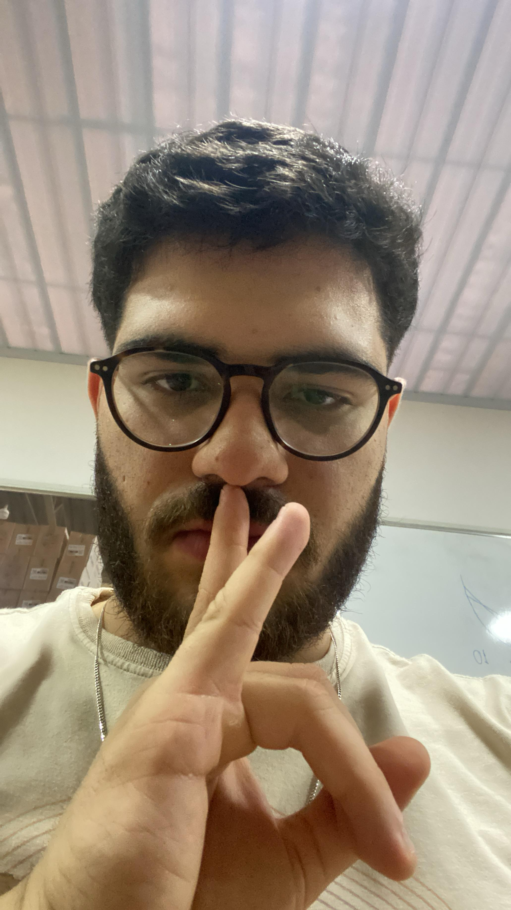
Hâte de te voir un jour
Oii minha vida, olha eu aqui novamente. Passando pra deixar um pequeno texto que fala exatamente o que passa na minha cabeça sempre que penso em voce
Não importa a distância, meu amor encontrá voce - pela brisa suave que passa entre os fios de cabelo
A distância não será um problema. Meu amor chegará até voce, como uma pena ao cair, leve e serena.
A leveza de um afeto, o calor de um sentimento, que sussura em silêncio.
Do fundo do meu coração, eu te amo Awany.
Do seu futuro marido 🙂
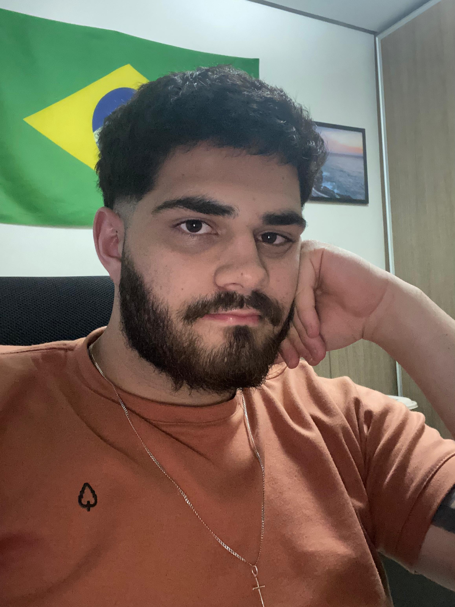
ton futur mari ici
Bom, essa carta aqui nao vai ser bem uma carta, nao vou me dar o trabalho nem de acentuar corretamente as palavras entao se tiver algo escrito errado ja peco desculpas
Na verdade essa aqui vai ser mais um desabafo, entao se quiser pular ela nao tem mt problema, pq o dia hoje foi terrivel, hoje demorei a falar com vc, e nesse momento que escrevo vc ja esta dormindo, mas tem muita coisa passando na minha cabeca, questao de futuro, medo das coisas darem errado...
Nao ser bom o sificiuente pra conseguir o que eu quero. Meu carro ta um lixo, to sem dinheiro nenhum, to em um tralbalho que ta me desgastando ao maximo, e minha cabeca nao para de falar toda hora, vc tem que fazer mais, vai e faz mais e mais e mais, mas eu n tenho tempo o suficiente por dia pra fazer, nao sei se vc me entende quando falo isso.
Entao era mais isso, muita coisa passando pela minha cabeca, medo, inseguranca, etc etc etc. Todo mundo fala q to no caminho certo, que tenho um futuro bom pela frente, mas nao parece nao, parece que daqui um tempo eu nao vou ter conquistado nada do que quero, e isso e o que mais me assusta hoje.
sao exatamente 00:20 quando to escrevendo isso aqui, espero que vc esteja tendo bons sonhos, e que Deus esteja ao seu lado, cuidando de voce pelas entrelinhas da sua vida.
Te amo meu bem
Do seu futuro "eu te amo" 🙂
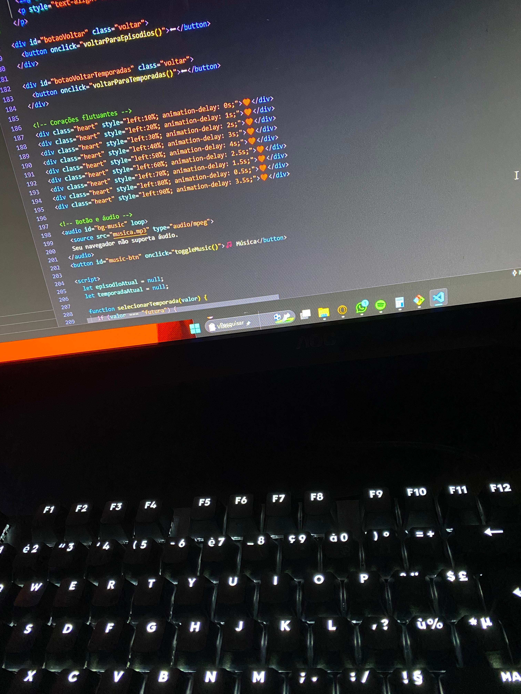
Même perdu, je t’aime encore
Boa noite, meu amor.
Tem uma coisa que eu quero deixar clara pra você. Caso algum dia você se pergunte: "Será que ele realmente gosta de mim?", saiba que, desde o momento em que a gente voltou a se falar, eu não pensei em nenhuma outra mulher. Eu não toquei em nenhuma outra mulher, porque eu vou esperar por você.
O tempo que for preciso, eu vou esperar por você. Eu quero que seja você. Já falei isso várias vezes.
Tem uma mulher lá no trabalho, bem mais velha, que me perguntou como estava minha vida amorosa. Eu respondi:
"Olha, por agora — e pelos próximos anos — não existe vida amorosa, até eu encontrar a pessoa que eu amo."
Aí mostrei o site que fiz pra você pra ela e tudo mais. Depois de mostrar, eu falei:
"Francine, eu vou me casar com essa mulher. Tenho certeza disso. Sabe quando você sente que uma coisa vai acontecer? Então, eu tenho certeza de que minha esposa é ela. Só que agora ela tá longe... mas vai chegar o dia."
Então, caso um dia você se pergunte:
"Será que vale a pena esperar?" ou "Será que ele ainda pensa em mim?"
Aqui está sua resposta:
Eu te amo, e vai ser você.
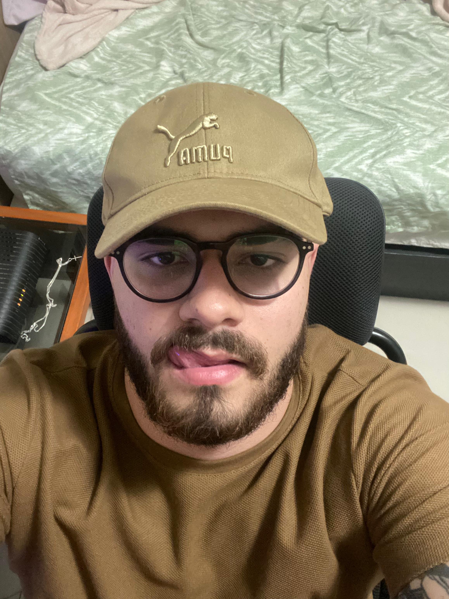
Tu es tout ce que je veux et tout ce dont je rêve.
Entre risos bobos e olhares calmos,
a gente vai se achando no meio do caos.
Não é conto de fadas, nem sonho perfeito,
mas tem carinho sincero e amor do nosso jeito.
Tem dias que tudo é silêncio e presença,
outros, só saudade virando crença.
Mas até na distância ou no pouco falar,
tem um tanto de mim querendo te encontrar.
Não precisa rima difícil ou verso ensaiado,
só esse sentir que chega desajeitado.
Porque amar você não é fórmula ou razão,
é só esse conforto bom no coração.
Love u my baby
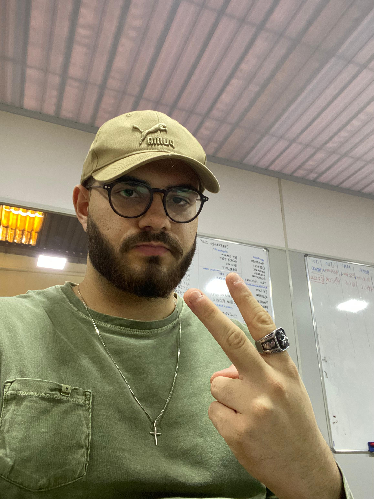
Je n’arrive pas à croire qu’on est mariés maintenant
Te vi sem te ver, te ouvi sem tua voz,
nosso encontro foi acaso ou o destino veloz?
Num mundo de telas, teu nome brilhou,
e um simples "oi" o meu mundo mudou.
Teu riso, em texto, me faz sorrir,
teu silêncio, em ausência, me faz sentir.
E mesmo sem toque, sem cheiro, sem chão,
carrego tua alma dentro do meu coração.
Não sei o calor do teu abraço apertado,
mas sinto o afeto em cada recado.
Não sei da cor exata do teu olhar,
mas nele, em sonho, já quis me afogar.
Entre mapas e milhas, a distância é cruel,
mas o que é longe, pra quem sente o céu?
Pois se o amor é vento que a gente não vê,
o que temos é mais real do que dá pra entender.
E um dia, quem sabe, o tempo conspira,
teus olhos nos meus, teu riso que inspira.
Mas até lá, sigo firme, sigo crente:
que amar de longe, é amar igualmente.
Até logo, amor… minha princesa, minha vida. Mesmo longe, você continua sendo tudo pra mim.
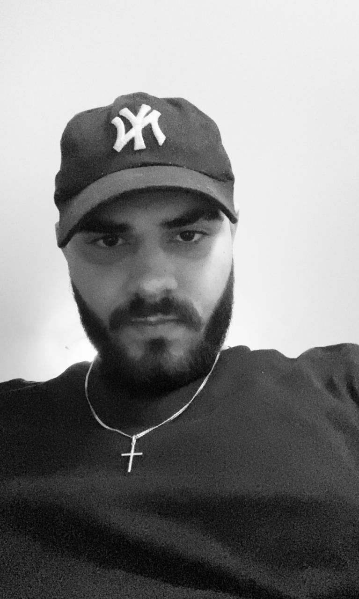
J’espère que tu ressens la même chose que moi.
Então meu amor, chegamos ao fim da primeira temporada dessa pequena demonstração de amor que estou fazendo pra você.
Queria dizer que uma das melhores coisas que acontecem no meu dia é parar no final da tarde e escrever pra você. Sinto que cada vez estou mais proximo de você…
Agora que você arrumou um trabalho ai você vai ficar bem cansada, mas saiba que eu fiquei orgulhoso pra caralho de você, e outra,
Quando você falou do concuros, que seu estudo ninguém tira, nuuuu, ja sabia que era você com quem queria me casar, mas agora, slk, você é uma mulher incrível.
Com tudo, passando pra falar mais um vez que te amo, e que vc é especial pra mim.
Essa temporada está chegando ao fim, mas nossa historia juntos so esta começando, cada texto, cada dedicação, é um passo a menos que vou dar para poder te ver em um futuro.
Aguarde os proximos episódios minha princesa, você vai gostar do que esta por vir...
Mais uma vez, EU TE AMO. Até amanhã.
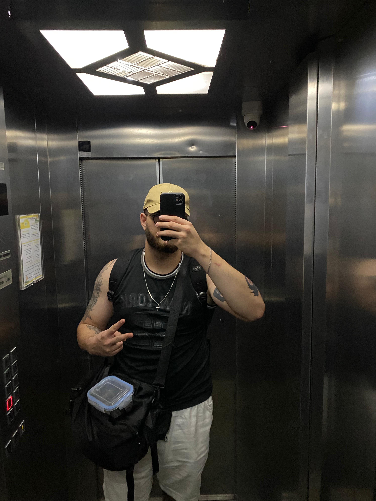
Je ferais n'importe quoi pour toi.
Minha princesa...
Aqui começa a nova fase dessa história. Já passamos por tantas emoções, risadas, desabafos... mas tudo isso é só o começo. ❤️
Cada palavra que eu escrevo aqui é mais um passo em direção a você. Ainda que estejamos longe, minha intenção é te fazer sentir perto — mesmo que por letras na tela.
Hoje inauguro a Temporada 2 com ainda mais amor, mais carinho, e a certeza de que cada carta é feita com o coração inteiro.
Vamos seguir juntos, mesmo à distância, por mais 365 batidas do meu coração.
Te amo!
— Lucas 🌹
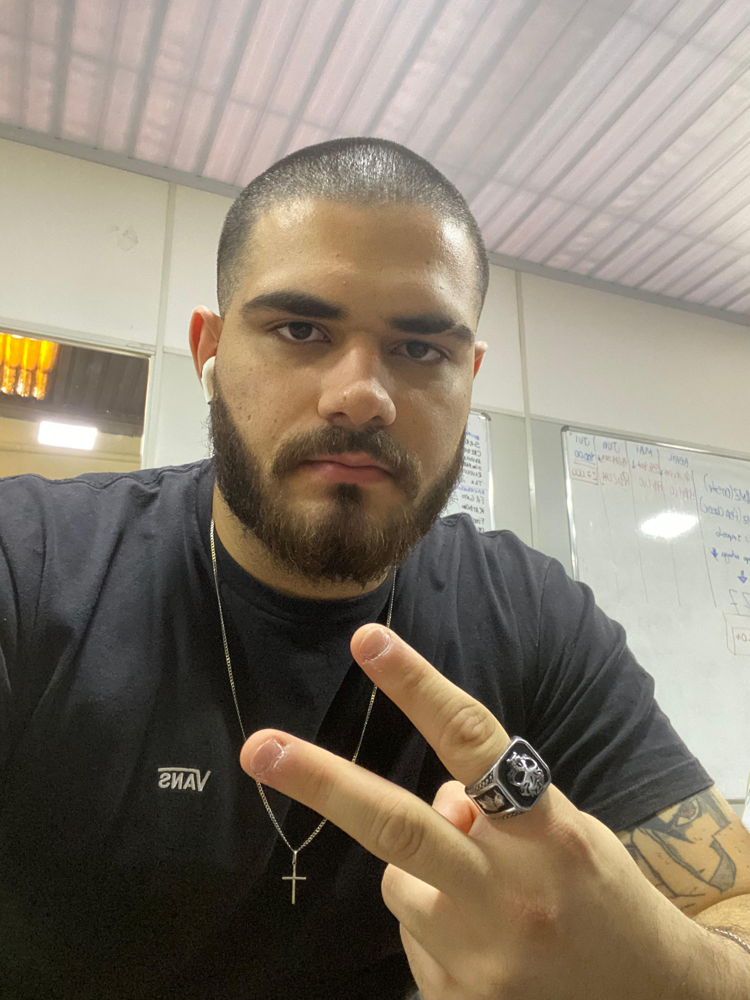
Je veux toujours te voir sur l'autel.
Coisas para você fazer quando esiver atoa:
Mano, que eu penso em você todos os dias, você ja sabe, mas, quando você pensar em mim, não sinta vergonha em mandar fotos zoadas,
audios (eu adoro ouvir sua voz), videos fazendo qualquer macacada sua kkkkk, até pq, sempre que recebo uma mesagem sua, me abre um sorriso
muito sincero no rosto.
Aliás, até quando você só manda um “oi”, meu coração já dá aquela acelerada besta kkkk. Parece até que é a primeira vez que a gente tá se falando, mesmo eu já um pouco do seu jeitinho — sua risada, seu olhar, suas manias que eu acho lindas demais.
Você tem esse efeito em mim… Me deixa leve, me faz sorrir fácil, e até nos dias mais puxados, só de ver uma notificação sua, já melhora tudo.
Então por favor, nunca ache que tá incomodando, ou que é bobeira me mandar qualquer coisa. Pode ser uma foto com cara de sono, um áudio falando besteira, ou um vídeo bobo… eu amo tudo que vem de você. De verdade.
Quando a saudade apertar (não estou falando necessariamente de mim agora)— e ela sempre aperta — me manda qualquer coisinha. Nem que seja só um “tô com preguiça, mas lembrei de você”. Eu já vou me derreter todo.
Você me faz um bem que nem sei explicar. Só sei que, de todos os jeitos, você é especial demais pra mim. E eu não trocaria essa conexão nossa por nada nesse mundo.
Te amo minha pituquinha🤍
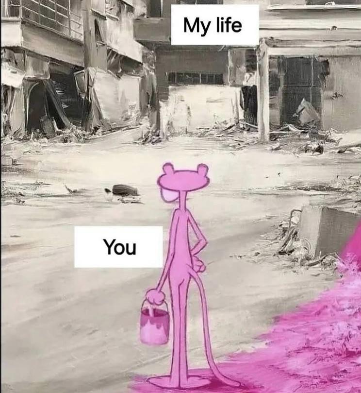
Un jour, j’espère te dire tout ça les yeux dans les yeux.
Oii meu amor, minha pituquinha, hoje voce falou que não aguentava o trabalho.
Mas sabe o que eu acho? Que voce da conta sim, você saiu do seu país, foi parar do outro lado do planeta,
Aprendeu uma lingua que eu particularmente acho DIFICIL pra carai, arrumou um trampo... e tem coragem de duviar de voce mesma?
Minha filha vc é uma mulher extremamente forte, entao quando esse corno desse cara q trabalha ai com vc vier falar merda, so escuta e ignora
Pq logo logo vc vai ta em um lugar mt melhor, onde vão reconhecer seu esforço, sua dedicação e seu talento.
E quando esse dia chegar — e ele vai chegar — quero que você olhe pra trás e veja o quanto você cresceu, o quanto enfrentou, e sinta orgulho de cada passo que deu.
Você é luz, mesmo quando o mundo tenta te apagar. Você é força, mesmo quando acha que vai desmoronar.
E lembra: não importa a distância, eu tô aqui torcendo por você, todos os dias.
Você merece o mundo inteiro, minha pituquinha, e eu vou continuar te lembrando disso até você acreditar tanto quanto eu acredito. ❤️
Com todo meu carinho,
Lucas
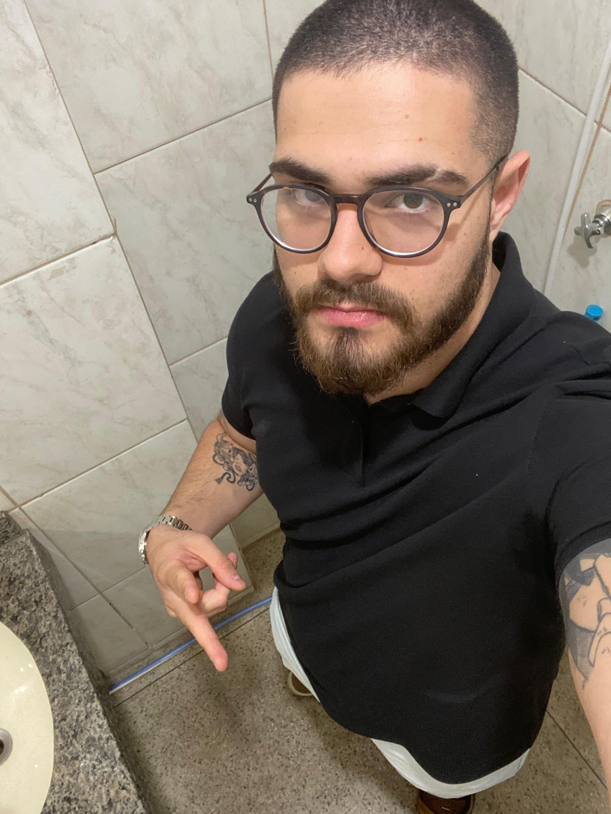
Avec le temps, tout s'améliore mon petit.
Bom dia ma vie, são exatamente 08:33 da manha de uma quarta-feira, e eu estou literalmente congelando de frio, to com a mão no teclado aqui, e ta tudo gelado, meus dedo ta duro, slk n compensa.
Não vejo a hora de me encontrar com vc, ta tudo encaminhando pra dar certo, so que ainda vai demorar um pouco mas ta suave, como esta no titulo de umas das cartas que ja foram escritas, sem pressa sem promessa, unica coisa que muda é que eu prometo que vai aontecer.
Ultimamente estou sem nenhuma ideia do que escrever pra vc minha joia, entao aqui vai uma cantada bem fubanga:
"Nas curvas do seu corpo, eu faria o que Senna fez em Mônaco em 1990"
Vai tomano o pai de piloto
Te amo pituquinha🤍
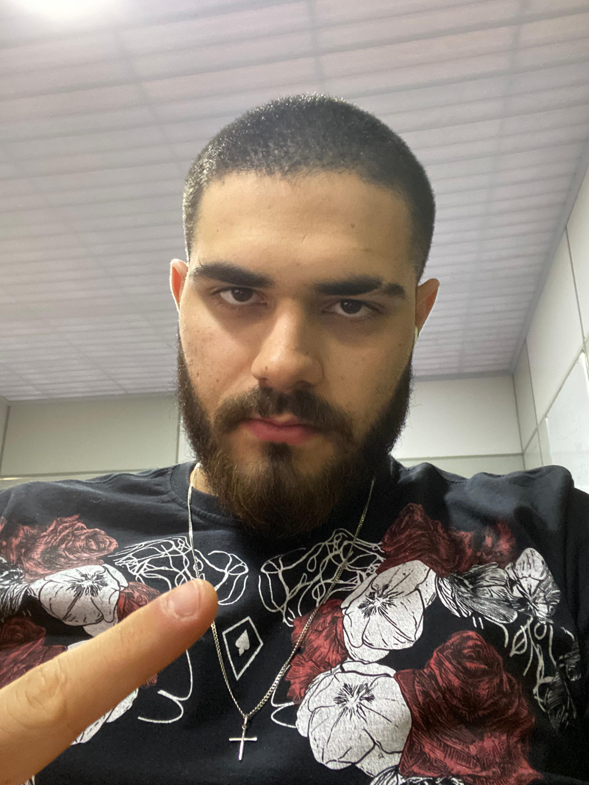
Tu es l’erreur de stratégie qui manque à ma Ferrari.
Oi meu amor, desculpa ter ficado um tempo sem escrever pra você, minhas aulas voltaram e agora não tenho tempo pra nada mais.
Mas vou tentar voltar a escrever todos os dias, hjoe e dia 21/08, você ta bem distante desde ontem, aconteceu alguma coisa?
Tem umas coisas que voce nao sabe sobre mim, mas eu sinto muito as coisas vey, eu sei q voce precisa do seu tempo as vezes e respeito 100%.
Mas me avisa, quando nao quiser conversar, me avisa quando estiver mal, não to querendo te cobrar nem nada, só se comunica mais cmg.
Eu quero muito que a gente de certo, mesmo estando longe. Acho que seria muito bom termos essa comunicação limpa, para que eu não fique o dia todo me perguntando o que aocnteceu.
Como vc disse, sua alma sente a minha, e a minha sente muito a sua. E eu penso nisso todos os dias.
Logo logo vai chegar o dia que a gente não vai mais precisar se falar pela tela, e eu vou ate o fim por vc.
Eu amo voce
E quero estar mais perto.
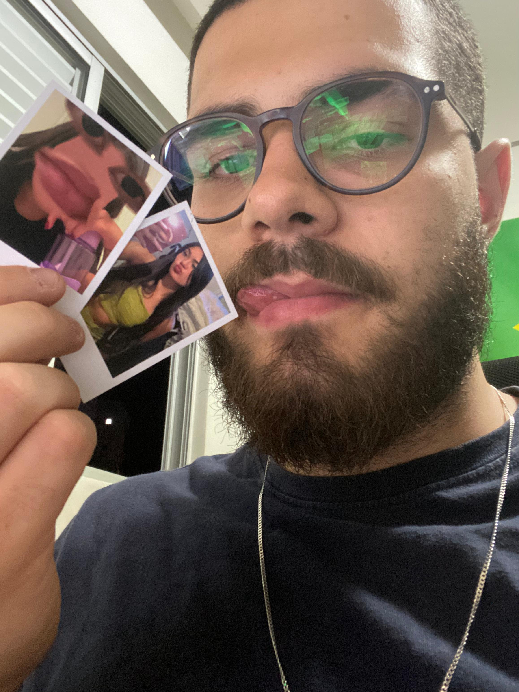
Je t’attendrai jusqu’à la fin.
Estou pedindo para você ficar,
não porque eu não sei viver
sem você, pois sei. Já fiz isso
antes.
A questão é que eu não quero.
Enquanto eu puder escolher,
você será a minha escolha.
Portanto, saiba que não estou
sussurrando em seu ouvido;
estou gritando com toda a força
dos pulmões. Eu quero você
aqui.
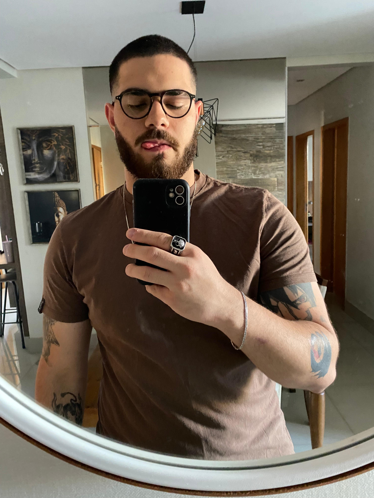
.Mon âme ressent la tienne.
Eu sei que nos conhecemos tem pouco tempo,
e eu nao quero parecer muito apressado.
Mas é que eu não consegui dormir ontem a noite
porque eu nao lembrava seu nome completo.
Nem como voce gosta do seu café.
E por alguma razão, não existe nada no mundo
que eu querira saber mais que isso.
Exceto talvez como fica seu cabelo bagunçado de manhã.
E o que te faz rir ate chorar,
ou o que te faz rir quando esta chorando.
Qualquer uma dessas respostas ja seria o suficiente,
e eu sei que nunca nem nos vivos, e eu nao quero parecer muito apressado.
Mas eu nao consegui me concentrar hoje cedo, porque eu nao sei sua comida favorita.
E os sonhos que voce nunca diz em voz alta, mas secretamente deseja tornalos realidade.
E se eu te desse flores? Voce gostaria que elas fossem azuis?
E eu sei que nos conhecemos tem pouco tempo,
E eu nao quero parecer muito apressado.
Mas é que derrepente a sua voz ficou na minha cabeça,
tocando repetidamente...
E provavelmente eu nunca vou dizer isso em voz alta,
e talvez eu deva dormir um pouco mais,
mas é que derrepente, tudo que e significativo pra voce,
se tornou significativo pra mim tambem.